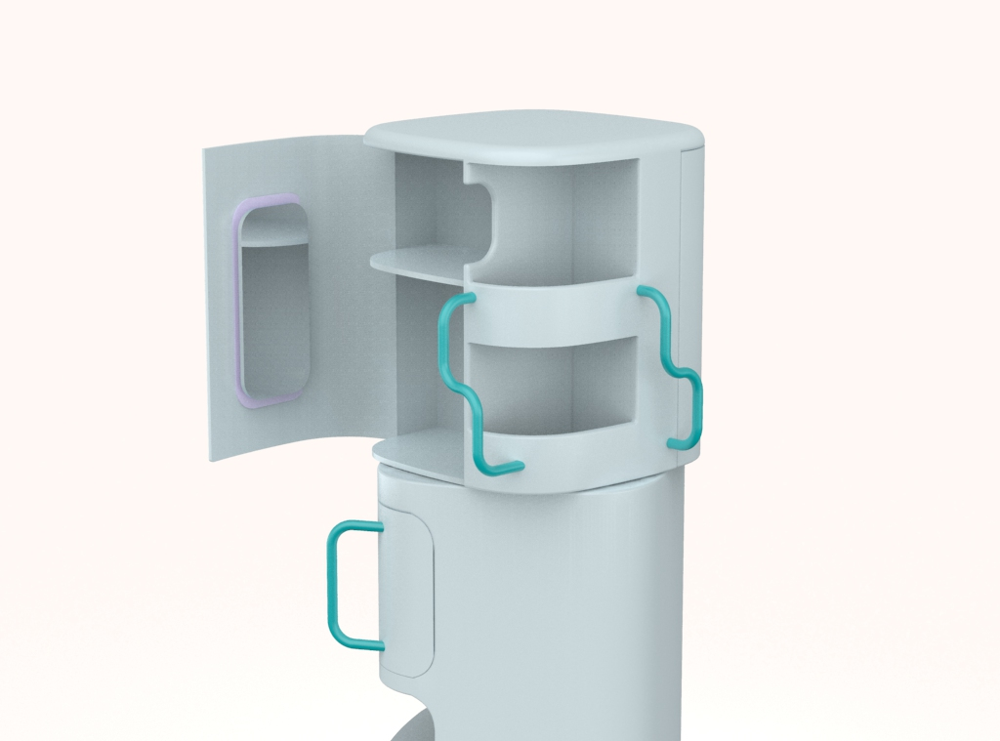
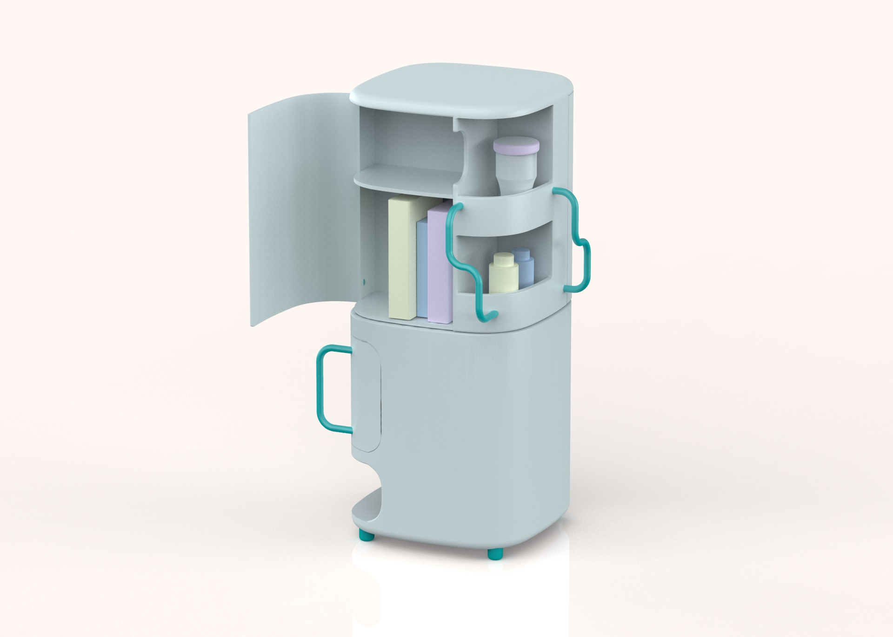
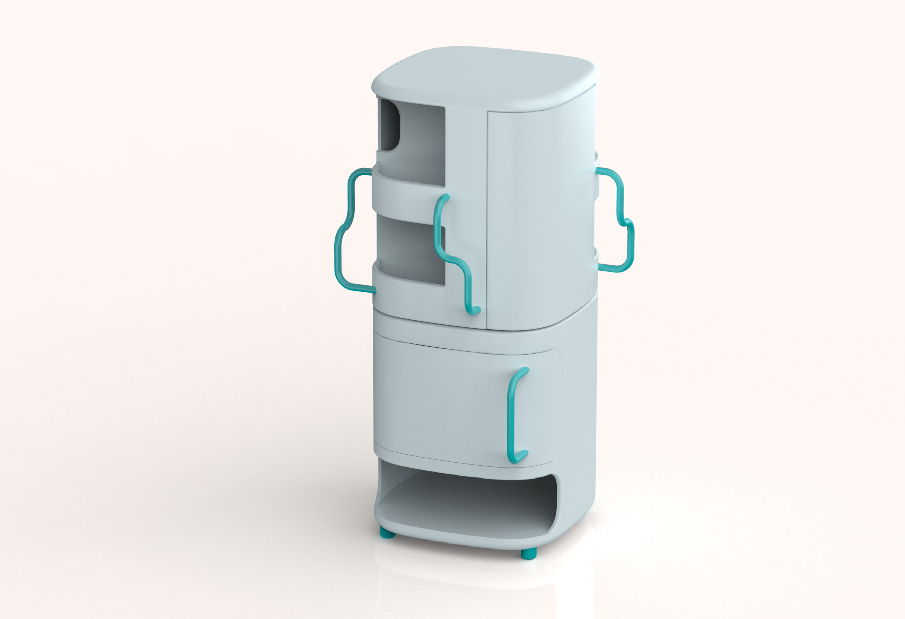
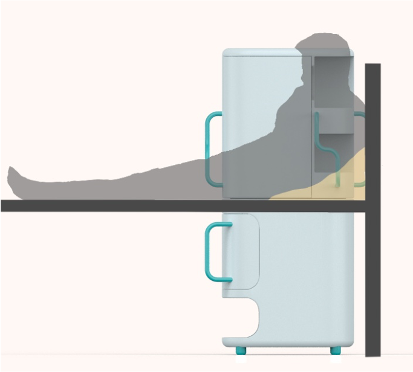

Bedside table,product disign,2021
旋转式床头柜想要减少介护型老人卧床生活的消极心理，让老人拥有方便自主支配的空间，实现想要的活动，保持自主能力和积极态度。带有圆角的外形、弯曲的转动把手和在侧面的抽屉把手等细节，遵循适老原则，方便介护型老人使用。
The rotary bedside table wants to reduce the negative psychology of the aged with nursing support in their bed life, so that the elderly has a convenient and autonomous space to realize the desired activities and maintain the autonomy and positive attitude.The detail such as the shape that contains round horn, curving turn handle and drawer handle, make it convenient for old people to use.
   